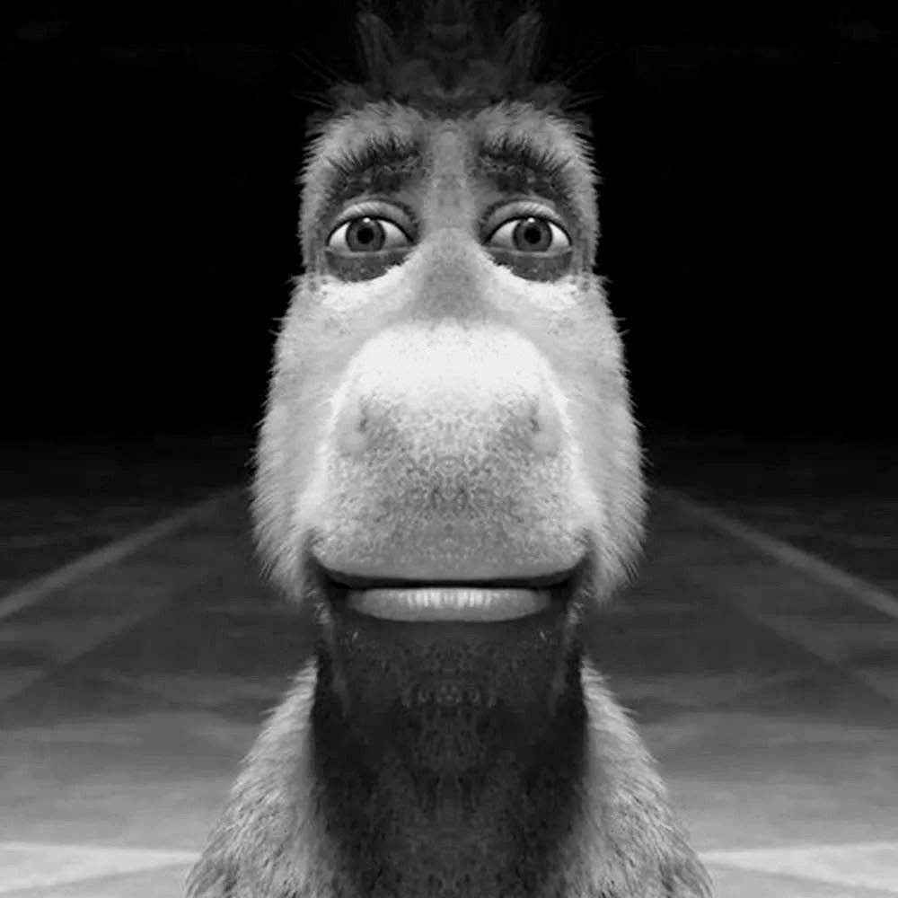

Історія успіху осла

-
Чому Осел?
- Осел — єдиний, хто не боїться Шрека: З самого початку Осел не злякався вигляду чи рику Шрека, хоча всі інші персонажі бояться. Він відразу став наполегливо намагатися подружитися з ним. Це свідчить про його сміливість та доброзичливий характер.
- Магічні здібності Осла: У другій частині "Шрека" Осел тимчасово перетворюється на білого коня після вживання чарівного зілля. Це був несподіваний поворот для глядачів, а також послужив джерелом гумору, оскільки Осел був у захваті від своєї нової форми.
- Бо Шрек

Це ніколи не Шрекінчится
Це кохання!!!